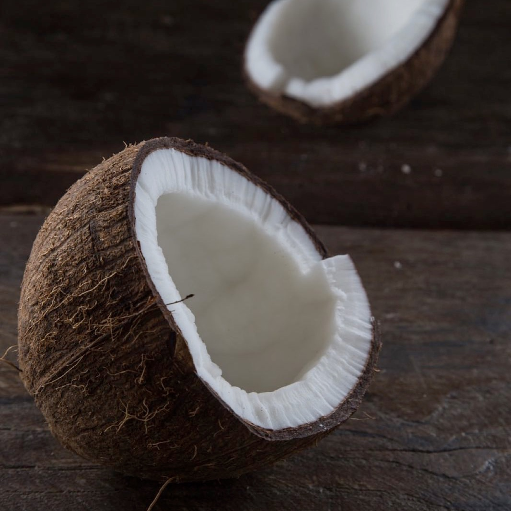
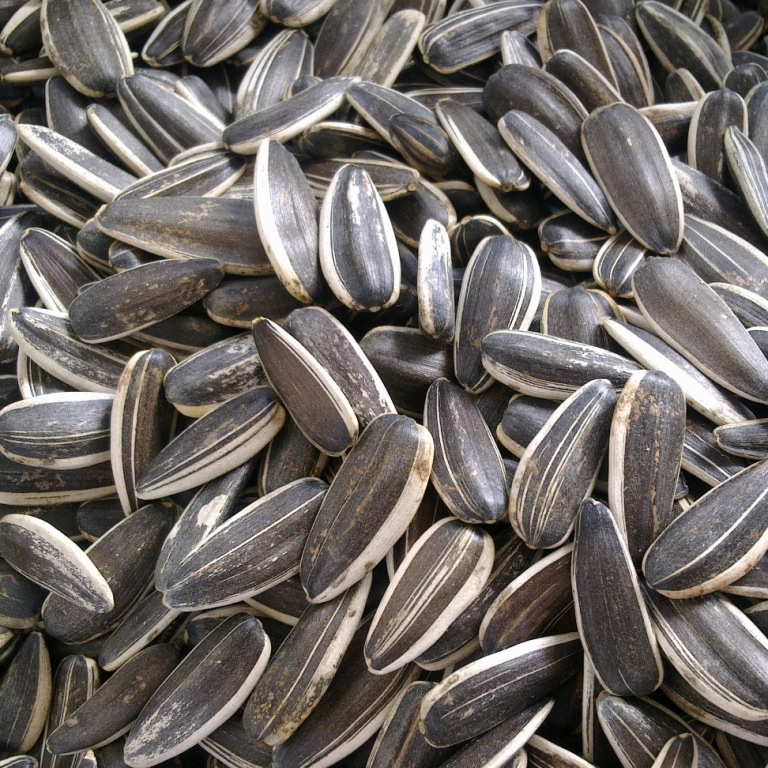
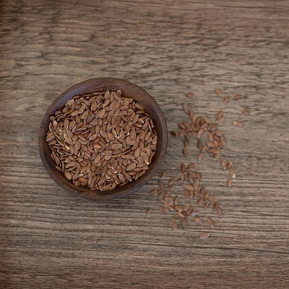
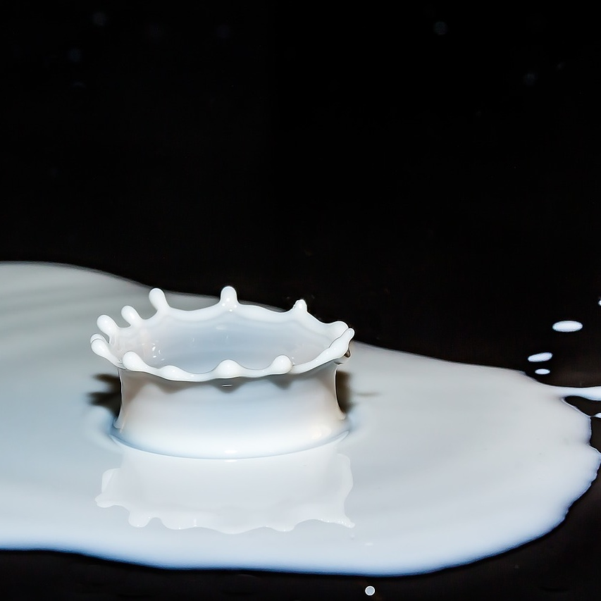
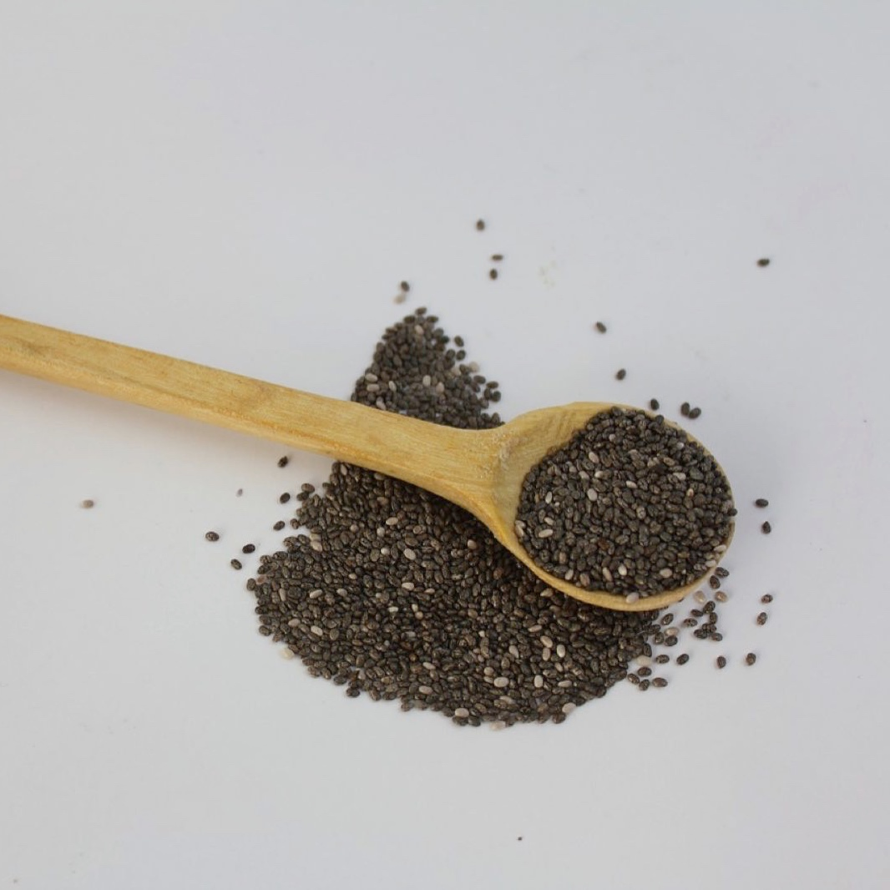
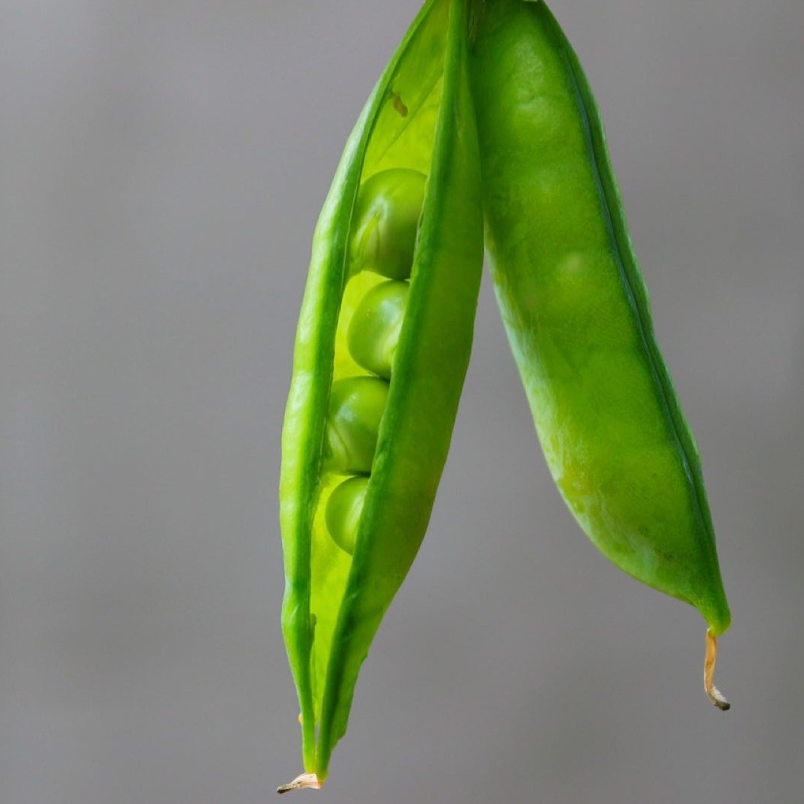

营养档案
健康的脂肪
早已经过了谈脂色变的年代，优质的脂肪是人体必须的燃料。
脂肪在细胞膜的形成，荷尔蒙的产生，器官的保护以及能量存储中都扮演了重要的角色。部分必要脂肪酸在人体中无法合成，只能通过饮食摄入。
健康的脂肪能让你的大脑和身体充满能量。我们精心挑选了椰子油，亚麻籽油，奇亚籽，葵花籽油等优质植物脂肪，提供了比例恰当的饱和脂肪酸，单不饱和脂肪酸以及多不饱和脂肪酸，包括MCT，ω-3，ω-6等。

椰子
每瓶LIMO中含有10g左右的有机椰子油，富含易吸收的中链甘油三酯（MCTs）以及能够长时间吸收的长链甘油三酯。

葵花籽
葵花籽油含有90%的不饱和脂肪酸 ，其中大多为ω-6（亚油酸），有助于调节血液凝结、促进细胞增殖、组织修复、参与免疫系统的正常工作。

亚麻籽
亚麻籽油含有大量的α-亚麻酸，是必须从食物中摄取的，即所谓的“必需脂肪酸”（曾被称作“维生素F”）的重要组成部分。具有降血压血脂，抗癌，抗炎症，提高大脑健康的效果。
高蛋白
人一天的活动需要消耗大量的蛋白质，特别是对于有运动习惯的人来说，高质高量的蛋白质不可或缺。高蛋白含量的食物有助于降低体脂水平，增强饱腹感。然而在一般的超市和餐厅中，很难吃到含有高质量蛋白质的食物。
每餐LIMO（505卡路里）中含有22.9g的蛋白质，主要来自乳清蛋白，牛奶蛋白和豌豆蛋白，蛋白质含量和氨基酸的丰富度均远超一般食物。丰富的蛋白种类提高了营养的完整度和吸收率，保障了你的健康和活力。我们没有使用高致敏性的大豆蛋白，能够适用于更广泛的人群。

牛奶
乳清蛋白含有全部九种必需氨基酸，其中亮氨酸和谷氨酸的含量诶长丰富。研究表明亮氨酸是刺激肌肉增长的主要氨基酸，意味着乳清蛋白对于想要增肌，塑性，保持健康的人来说，是理想的蛋白质来源。

奇亚籽
奇亚籽低热量且富含优质纤维，蛋白质和不饱和脂肪。其中ω-3和ω-6的比例为3：1，高比例的ω-3有助于提高整体健康水平，降低诸如心血管疾病，高血压，2型糖尿病的发病率。奇亚籽近年来被广泛认为是一种“超级食物”，其含量丰富的膳食纤维可以调节肠道功能，降低血糖的吸收，在欧美是很火的“减肥圣品”。

豌豆
豌豆蛋白含有丰富的氨基酸，因为富含精氨酸（L-arginine），是少有的能够在肌肉恢复上能够媲美乳清蛋白的植物蛋白。LIMO中的豌豆蛋白提取自分离豌豆，含有大量的赖氨酸。
适量的碳水化合物
精制糖被广泛认为对身体有负面影响。高糖分的食物会诱发炎症和心脑血管疾病，破坏内分泌和新城代谢功能
考虑到这点，LIMO中仅含有必要的淀粉的糖分以保证能量和饱腹感，避免了高糖分带来的其他副作用。LIMO中含有较低的糖和较高的膳食纤维，以减少高糖分对于血糖的负面影响，高含量的膳食纤维能够提升饱腹感。LIMO中使用的糖分都来自于天然的水果，燕麦和玉米研磨粉。
异麦芽酮糖
异麦芽酮糖是适合糖尿病人食用的糖，因为其不会在唾液内水解，使人体对糖的吸收和利用达到了平衡，不会使血糖浓度提高。这种糖在肠内会被微生物缓慢分解，刺激肠道内有益菌群的生长和繁殖，优化人体的消化系统。
燕麦
燕麦因为富含多种必须营养素，可以使胆固醇下降，被现代人视为是健康食品，富含蛋白质（主要是燕麦球蛋白），膳食纤维（燕麦β-葡聚糖），多种维生素B，多种膳食矿物质（特别是锰）。
 乐慕网络科技（上海）有限公司版权所有 | 沪ICP备16031506号-1
乐慕网络科技（上海）有限公司版权所有 | 沪ICP备16031506号-1